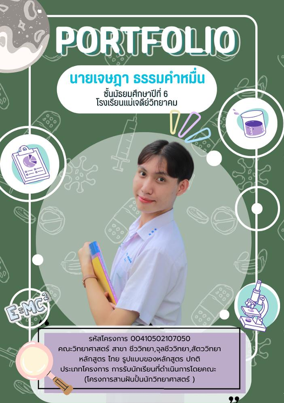
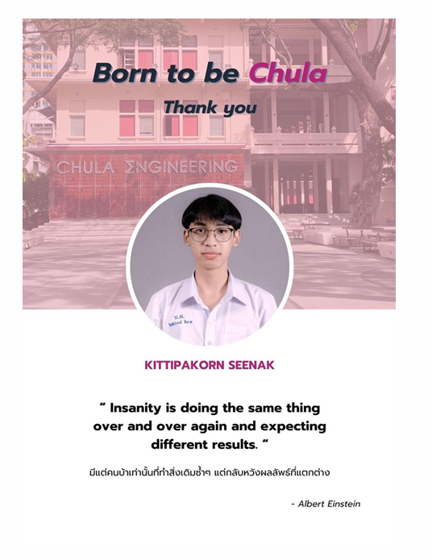
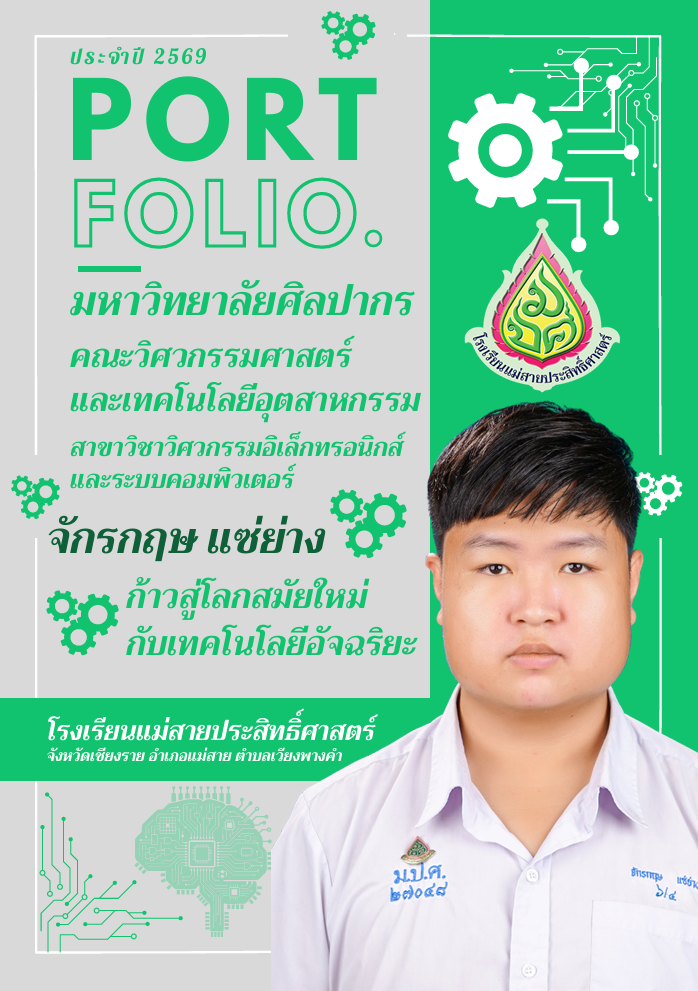
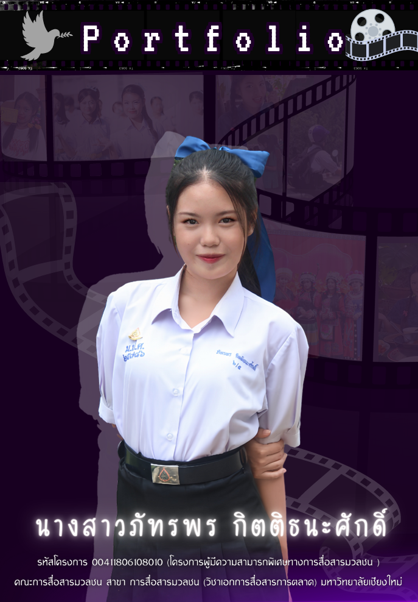

องค์ประกอบสำคัญที่ต้องมีบนหน้าปก
- ต้องมีคำว่า "PORTFOLIO" หรือ แฟ้มสะสมผลงาน และระบุปีการศึกษาให้ชัดเจน
- ระบุชื่อมหาวิทยาลัย คณะ สาขาวิชา และรหัสโครงการที่ต้องการยื่นสมัครให้ถูกต้อง
- ใช้รูปถ่ายหน้าตรงที่ถ่ายไว้ไม่เกิน 6 เดือน โดยแต่งกายชุดนักเรียนให้เรียบร้อย
- ระบุชื่อ-นามสกุลของผู้สมัคร และชื่อโรงเรียนที่กำลังศึกษาปัจจุบันอย่างชัดเจน
- อาจเพิ่มเติมคติประจำใจ หรือข้อความแสดงความมุ่งมั่นที่สอดคล้องกับคณะ/สาขา เช่น "ก้าวสู่โลกสมัยใหม่ กับเทคโนโลยีอัจฉริยะ"
สิ่งที่ควรทำ (DO)
- ทำตามรูปแบบและคำสั่งที่มหาวิทยาลัยกำหนดอย่างเคร่งครัด (เขาระบุมาแบบไหน ก็ต้องทำแบบนั้น)
- ตรวจสอบการสะกดคำและใช้ภาษาให้ถูกต้อง
- จัดทำเนื้อหาให้กระชับ เข้าใจง่าย เรียงลำดับให้ดี และมีความคิดสร้างสรรค์
สิ่งที่ไม่ควรทำ (DON'T)
- สวยแต่รูป หรือจ้างทำแพง แต่ไม่มีผลงานตรงตามความต้องการของมหาวิทยาลัย
- ใส่ข้อมูลมั่วๆ ไปก่อน หรือมีอะไรก็ใส่ไปจนเนื้อหาเยอะเกินไป
- เขียนผิดเขียนถูก เรียงลำดับผิด หรือทำผิดคำสั่งของมหาวิทยาลัยเด็ดขาด
💡 เคล็ดลับเพิ่มเติม (Pro Tip)
หลายคนคิดว่าต้องทำหน้าปกให้เป็น สีประจำคณะหรือมหาวิทยาลัย เท่านั้น แต่จากประสบการณ์จริง เรื่องนี้ไม่จำเป็นเสมอไป! กรรมการโฟกัสที่ผลงานและความเป็นตัวตนของคุณมากกว่า ดังนั้นควรเลือกใช้สีที่สะท้อนตัวตนของคุณ ดูสบายตา และทำให้ข้อมูลบนหน้าปกอ่านง่ายที่สุด


